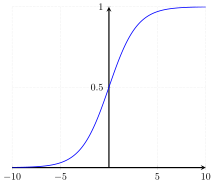
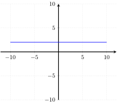

Monotonicity
- functions (basic notation, domain and co-domain)
When the domain and co-domain of a function each have an order defined over them, one can ask whether the function is order-preserving.
Consider the function \(f: \mathbb{N} \rightarrow \mathbb{N}\) with \(x \mapsto 2x\). The domain of \(f\) is \(\mathbb{N}\), the set of natural numbers, which is also the co-domain of \(f\). The set of natural numbers can be ordered by \(\leq\) in the usual fashion, e.g. \(2 \leq 4\) or \(0 \leq 0\). The function \(f\) respects the order induced by \(\leq\). For any two \(x\) and \(y\) such that \(x \leq y\), it also holds that \(f(x) \leq f(y)\). For instance, \(4 \leq 10\) and \(f(4) = 8 \leq 20 = f(10)\).
Let \(f: \mathbb{R} \rightarrow \mathbb{R}\) be a function from real numbers to real numbers such that \(f(x) = x^2 - 5x\). Then \(f\) does not preserve order in all cases. We have \(3 \leq 5\) and \(f(3) = 9 - 5 \times 3 = -6 \leq 0 = 25 - 5 \times 5 = f(5)\). But we also have \(0 \leq 1\) yet \(f(0) = 0 - 5 \times 0 = 0 \geq -4 = 1 - 5 \times 1 = f(1)\).
This property of order preservation is known as monotonicity.
Monotonicity with numbers
You might have already encountered monotonicity in the special case of a function from reals to reals. In this case, one can draw the function as a line or curve in a coordinate system.
- \(f(x) = 2x\)
- \(g(x) = \frac{2^x}{2^x+1}\)

- \(h(x) = \frac{x^2}{4} - 10\)
A function is monotonic iff it does not change direction: once it goes up, it cannot go down, and the other way round. However, it may stall, or never move at all. The functions \(f\) and \(g\) above are monotonic, but \(h\) is not as it changes direction, from going down to going up. Note that \(g\) is monotonic even though it rises more steeply at some points than at others — this is immaterial for monotonicity, it only matters that \(g\) never reaches a point where it suddenly changes direction and starts going down after having gone up before (or going up after having gone down before).
For each one of the following functions, say whether it is monotonic.
- \(i(x) = x^3 + 3x^2\)
- \(j(x) = 5 \sqrt{|x+2|} - \frac{5|x|}{3}\)
- \(k(x) = 2\)

- \(l(x) = 2x - 2^{x-4} + 3\)

Give another example of a function that is not monotonic.
While such numerical functions are a good starting point for grasping the intuition behind monotonicity, they provide an incomplete picture. The concept of monotonicity is much broader than that, and it extends far beyond functions from numbers to numbers. See the unit on universals for various linguistic applications of monotonicity, none of which have anything to do with numbers.
Isotonicity and antitonicity
Monotonicity is actually an umbrella term for two distinct properties: isotonic (monotonic increasing) and antitonic (monotonic decreasing). In both cases, the mapping from elements of the domain to elements of the co-domain must respect the order of the domain in a specific sense. Suppose that we have a function \(f\) from some domain \(D\) to some co-domain \(C\). As usual, thees are sets, but they are special sets in that each one has an order defined over its elements. Let us call these orders \(\leq_D\) and \(\leq_C\), respectively. Then an isotonic function preserves the order over the domain: if \(x \leq_D y\) in the domain, then \(f(x) \leq_C f(y)\) in the co-domain. And an antitonic function preserves the mirror image: if \(x \leq_D y\) in the domain, then \(f(x) \geq_C f(y)\) in the co-domain.
The function \(f\) from natural numbers to natural numbers with \(x \mapsto x+1\) is monotonic increasing. If \(x \leq y\), then it necessarily holds that \(x + 1 \leq y + 1\), and thus \(f(x) \leq f(y)\).
Suppose we order the set of all strings over alphabet \(\Sigma\) such that \(u \leq_D w\) iff there is some string \(v\) such that \(w = u \cdot v\). Intuitively, \(w\) is the result of adding 0 or more symbols to \(u\). Hence we have \(\mathit{aab} \leq \mathit{aaba}\) and \(\mathit{aab} \leq \mathit{aab}\), but \(\mathit{aab} \not\leq \mathit{abaa}\). Now let \(f: \Sigma^* \rightarrow \mathbb{N}\) be the function that maps every strings to its length (i.e. \(x \mapsto \left | x \right |\)), and the we order string lengths with \(\leq\) in the usual fashion. Then \(f\) is isotonic.
In order to see this, consider two arbitrary strings \(u\) and \(w\) with \(u \leq_D w\). By definition, then, \(w \mathrel{\mathop:}=u \cdot v\) for some \(v \in \Sigma^*\). But then \(\left | w \right | = \left | u \right | + \left | v \right |\), and since strings cannot have negative lengths, it must hold that \(\left | u \right | \leq \left | u \right | + \left | v \right |\). This in turn implies that \(f(u) \leq f(w)\). Since \(u\) and \(w\) were arbitrary, \(f(u) \leq f(w)\) truly holds for every choice of \(u\) and \(w\) with \(u \leq_D w\), exactly as required by the definition of monotonic increasing functions.
For each one of the following functions say whether it is monotonic increasing, monotonic decreasing, or neither.
- \(f: \mathbb{N} \rightarrow \mathbb{R}\), \(x \mapsto -x\)
- \(f: \mathbb{R} \rightarrow \mathbb{R}\), \(x \mapsto x - 10\)
- \(f: \mathbb{R} \rightarrow \mathbb{R}\), \(x \mapsto x^2\)
- \(f: \mathbb{R} \rightarrow \mathbb{R}\), \(x \mapsto \frac{x}{2}\)
- \(f: \mathbb{N} \rightarrow \mathbb{N}\), \(f(n)\) is \(1\) if \(n = 0\) and \(n \times f(n-1)\) otherwise
Given an example of a function that is both monotonic increasing and monotonic decreasing.
Recap
- If the domain and co-domain of a function each have an order defined over them, we can ask whether the function is monotonic.
Let \(A\) and \(B\) be arbitrary sets and \(\leq_A\) and \(\leq_B\) ordering relations over these respective sets. Then a function \(f: A \rightarrow B\) is isotonic (or monotonic increasing) iff \(x \leq_A y\) implies \(f(x) \leq_B f(y)\). We call \(f\) antitonic (or monotonic decreasing) iff \(x \leq_A y\) implies \(f(y) \leq_B f(x)\). A function is monotonic iff it is isotonic or antitonic.